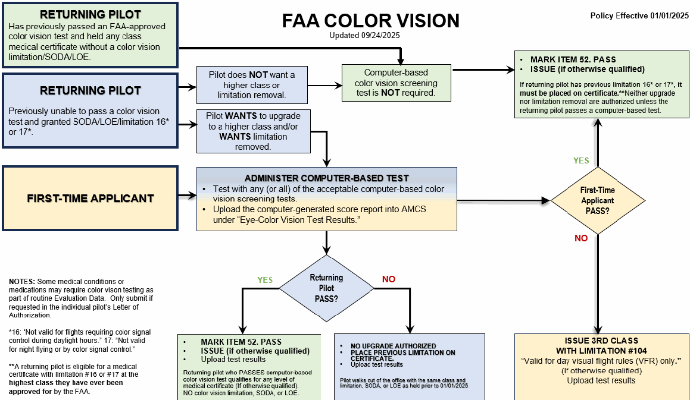

ITEM 52. Color Vision
(Updated 01/29/2025)
52. Color Vision |
|---|
|
|
I. Code of Federal Regulations
First- and Second-Classes: 14 CFR 67.103(c) and 67.203(c)
(c) Color vision: Ability to perceive those colors necessary for the safe performance
of airman duties.
Third-Class: 14 CFR 67.303(c)
(c) Color vision: Ability to perceive those colors necessary for the safe performance
of airman duties.
II. Examination Equipment and Techniques
See AME Information – Color Vision Screening Steps on next page.
AME INFORMATION - COLOR VISION SCREENING STEPS
(Updated 12/12/2024)
EFFECTIVE JANUARY 1, 2025: Approved computer-based color vision screening tests will be required for pilot exams performed on 01/01/2025 and after:
- Testing frequency will change to a one-time color vision deficiency screening.
- Testing for acquired color deficiency (e.g., due to a medical condition or a medication) will be listed under the Evaluation Data of the corresponding section in the AME Guide or in the Letter of Authorization.
A. FOR A RETURNING PILOT WHO HAS HISTORICALLY PASSED ANY PREVIOUSLY FAA-APPROVED COLOR VISION TEST:
- For all classes: Computer-based color vision screening test is NOT required.
- Mark Item 52. “PASS”
- AME should ISSUE (if otherwise qualified).
B. FOR A RETURNING PILOT WITH A PREVIOUS SODA OR LOE:
- 1. Pilot holds 3rd Class SODA or LOE :
• Wants to keep 3rd Class:
- Does not need computer test.
- Issue 3rd class certificate with no color vision limitation (if otherwise qualified).
• Wants to upgrade to 1st or 2nd Class:
- Administer any of the acceptable computer-based color vision screening tests.
- If PASS - no limitation required. AME can issue (if otherwise qualified).
If FAIL - issue a 3rd class medical certificate with limitation #104 “Valid for day visual flight rules (VFR) only.” If the individual requests an upgrade to 1st or 2nd class, they should appeal to the Federal Air Surgeon.
2. Pilot holds a 1st or 2nd class LOE or SODA (previously passed OCVT and CV MFT):
- Does not need computer test.
- Issue 1st or 2nd class medical certificate (if otherwise qualified).
- No color vision limitation required.
C. FOR A FIRST-TIME APPLICANT:
1. An applicant can attempt any (or all) of the tests that are approved at the time of the exam.
2. If unable to pass ANY of the acceptable tests:
- Mark Item 52. “Fail”
- Annotate Item 59. (Other Tests Given) with “FAILED _______.”
o LIST NAME of color vision test(s) attempted AND include the scores.
- ISSUE a 3rd Class medical certificate (if otherwise qualified). Add limitation #104: “Valid for day visual flight rules (VFR) only.” If the individual requests an upgrade to 1st or 2nd class, they should appeal to the Federal Air Surgeon.
- Upload the computer-generated score report as “Eye-Color Vision Test Results.”
- 3. If the AME does not have one of the approved computer-based tests:
- If the AME does not have an acceptable color vision test, they can issue a 3rd class medical certification with limitation #104. Do not defer.
- Alternately, the applicant can be tested at a different location: The testing physician/clinic must provide the AME with the color vision printout for upload into DIWS. Remember to put the name of the test taken AND scores in Item 59.
IMPORTANT NOTES:
- The above applies for routine color vision screening. If the individual has a medical condition or takes a medication which could affect color vision, additional color vision testing (when required) will be listed in the AME Guide or in their Letter of Authorization.
- ANY tests not specifically listed are NOT acceptable methods of testing for FAA medical certificate.
- Color Vision Correcting Lens (e.g., X-Chrom) are NOT acceptable to the FAA as a means for correcting a pilot's color vision deficiencies.
- For questions, see:
- For ATCS information, see the Acceptable Test Instruments for Color Vision Screening of ATCS chart or contact your RFS for any questions.
The Color Vision flow chart below shows pathways for AMEs to use to determine actions for “Returning Pilot” and “First-Time Applicant.”

ACCEPTABLE TEST INSTRUMENTS FOR COLOR VISION SCREENING – PILOTS
(Updated 08/27/2025)
EFFECTIVE JAN 1, 2025, testing for pilots will be an approved computer-based color vision test. Testing must be performed in person. Virtual testing, downloaded, or printed versions of color vision tests are prohibited. AMEs must use these specific color vision tests for pilot evaluations.
The following are approved computerized color vision tests for FAA medical certification purposes.
- Follow the manufacturer’s guidelines to administer.
- Record test name and all required scores in Item 59.
- If applicable, upload computer-generated printout into AMCS as: Eyes-Color Vision Test.
- For more information, see AME Information - Color Vision Screening Steps .
- For ATCS see the Acceptable Test Instruments for Color Vision Screening of ATCS chart or contact your RFS for any questions.
TEST | MINIMUM NUMBER CORRECT TO PASS |
Colour Assessment & Diagnosis (CAD test) Version - Certification: “Environment and Aviation (Commercial).” If passes FAST version, no further testing is needed for color. If fails FAST version, the full definitive CAD must be completed. Note: US or UK keyboard can be used | Score must be: RED GREEN (RG): 1.7 if normal Less than 6 if diagnosed as Deutan; Less than 12 if diagnosed as Protan AND YELLOW BLUE (YB) - less than 2.4 NOTE: An RG score of less than 1.7 indicates Normal. The RG passing score varies by diagnosis. Less than 6 indicates Deutan; and less than 12 indicates Protan. |
Rabin Cone Test (RCCT) Air Force/Army/Navy/Coast Guard Version Test each eye separately. Staircase version allowed. | Score must be 55 or higher for EACH color: RED GREEN BLUE |
Waggoner Computerized Color Vision Test* Adult Diagnostic OR FAA Color Vision Test Windows: Waggoner CCVT (WCCVT) – Waggoner Diagnostics iOS: Waggoner CCVT on the App Store (apple.com) Android: Waggoner CCVT *What is tested in each section: Section 1: General screening for Protan (red) and Deutan (green) deficiency. Section 2: Genetic and acquired deficiencies. Section 3: Quantifies Protan (red) deficiency. Section 4: Quantifies Deutan (green) deficiency. Section 5: D-15 N/A for FAA purposes. NOTE: If applicant does not pass Section 1, Section 3 and 4 will be automatically given. | Score must be: General - 21 or higher (of 25); AND Tritan - 10 or higher (of 12) OR Protan - 20 or higher (of 32); AND Deutan - 20 or higher (of 32); AND Tritan - 10 or higher (of 12) |
COLOR VISION - FREQUENTLY ASKED QUESTIONS (FAQS)
(Updated 08/27/2025)
- 1. Why is the FAA Changing their policy now?
Several factors necessitate the change: Proliferation of color displays, concern that current testing might not be adequate for the existing and future color-rich environment, poor standardization in administration of current tests, incorrect testing by some AMEs, and NTSB safety recommendation (for commercial pilots). Advances in testing technology and completion of test evaluations at the Civil Aerospace Medical Institute enabled the change.
- 2. If I am unable to obtain one of the computer-based tests, can the pilot be tested at a different location?
YES. The testing physician/clinic must provide you with the color vision printout for upload into DIWS. Remember to put the name of the test taken AND scores in
Item 59.
If the AME does not have an acceptable color vision test, they can issue a 3rd class medical certification with limitation #104. Do not defer.
Note: Online or virtual testing is not acceptable. Testing must be in person.
- 3. Does the test need to be performed within 90 days of the AME exam?
NO. The FAA can accept a previous test result provided it is one of the acceptable computer-based tests. (E.g., Some individuals may have had this testing in the military. Those scores may be submitted.)
- 4. Should the AME defer a new applicant if they are unable to pass any of the acceptable color vision screening tests?
NO. The AME should ISSUE a 3rd class medical certificate (if otherwise qualified) with limitation #104 “Valid for day visual flight rules [VFR] only.”
- 5. Is the individual limited to taking only ONE of the computer-based tests?
NO. The individual can take any of the three acceptable computer-based tests. Passing ANY of the three is acceptable and failure of one test does not preclude an attempt to pass another.
- 6. Can the individual submit a test taken at home or a free trial version?
NO. If a computer color vision test was done outside the AME’s office, the AME must verify that the results belong to the individual. To maintain test integrity, the test must be performed by a practitioner who can verify the individual’s identity (similar to an EKG). If the results of the test cannot be linked to a specific individual, it cannot be used.
- 7. Will the individual be given a more restrictive certificate with this new policy?
NO. Whatever the individual has walking into the AME’s office (e.g., LOE, restricted certificate/any class, unrestricted, failed) is what they will walk out with, unless they take a new color test.
- 8. Does the FAA require normal color vision for pilots?
Pilots must possess the ability to perceive colors necessary to discern cockpit display colors, aircraft signaling, and airport lighting for the safe performance of airman duties.
- 9. What are common causes of acquired color vision deficiency?
This list is not all inclusive, but common causes include:
- Eye conditions such as glaucoma, age-related macular degeneration, retinal detachment, or cataracts.
- Brain and nervous system conditions such as Alzheimer’s, multiple sclerosis, or certain tumors.
- Medical conditions such as diabetes, alcoholism, leukemia.
- Medications such as Plaquenil (chloroquine or hydroxychloroquine), blood pressure medications, erectile dysfunction medications.
10. If the pilot has a special issuance for an eye or neurology condition, why do they now need an additional color vision test?
Certain medical conditions or medications may cause a red/green or blue/yellow color deficiency. While we do not need to test everyone for an acquired color vision defect, conditions which may also have a color vision deficiency will require specific testing. The pilot should refer to their Letter of Authorization.
11. How does an individual apply for a Color Vision Limitation removal or upgrade?
The individual can take any or all the acceptable computer-based tests. If they pass, they do not need further testing.
If they don’t pass, they need to request review by completing a Color Vision Limitation Review request. The AME should upload into AMCS:
- An “Eye-Color Vision Limitation Review.”
- Results of the Color Vision Test as “Eye- Color Vision Test Results.”
12. Do I test all pilots with a new computer-based test as of January 1, 2025?
NO. See the Color Vision Flow Chart. The AME only needs to test NEW pilots, those with a limitation 16 or 17 who want it removed, or those with a current LOE or SODA who want to upgrade. The individual can take any or all the acceptable computer-based tests.
- 13. Will the FAA consider adding additional computer-based tests in the future?
The FAA will consider approval for new computerized tests if the manufacturer provides reliability, validity, and sensitivity/specificity documentation along with evidence of cut scores aligning with those specified for CCT, CAD, and CCVT.
- 14. How many times can an individual take the same computer-based test?
There is no limit to the number of trials allowed. However, if multiple attempts are unsuccessful, the AME should question if the problem is test taking skills or color vision deficiency.
- 15. Does the AME have to upload the actual color vision test report, or can they notate Pass/Fail and add comments?
The AME must upload a copy of the score report into AMCS under tag “Eye-Color Vision Test Results.” AMCS can accept a photo of the results by uploading file types as PDF, DOC, DOCX, JPG, JPEG, and XPS.
- 16. Can the AME accept a color vision test report brought in by the individual?
Like an EKG performed outside the AME office, the AME should verify the person tested and the testing facility. We can accept a test signed by a provider (preferably with their clinic information on the test results) or with an attached Detailed Clinical Progress Note (if performed in another clinic) with the correct pilot identification.
If identification is uncertain, the FAA cannot accept the test.
- 17. How does this policy change affect Air Traffic Control Specialists (ATCS)?
There is no change to the current requirements for ATCS at this time.
18. If the individual is an ATCS who is also a pilot and is seeking pilot certification for the first time (considered a first-time pilot), must they be tested using one of the new CV testing options?
While not required, an ATCS has the option of taking a computer-based test (those tests were added to the AME Guide as allowed for ATCS approximately one year ago). However, if the ATCS is a first-time pilot seeking pilot medical certification, they must take one of the computer-based tests.
COLOR VISION LIMITATION REVIEW
(Updated 01/29/2025)
Name: _______________________________________PI#: _____________________
Address: ____________________________________ Date of Birth: _____________
INSTRUCTIONS TO THE AME
Submit this only if the individual is unable to pass ANY of the acceptable computer-based color vision tests and wants an upgrade to 1st or 2nd class, is requesting a color vision limitation be removed, or is requesting an upgrade based on new testing.
Note: if the individual passes ANY of the acceptable computer tests: No limitation, no LOE, no SODA is needed for any class for color vision. Issue the class of certificate applied for (if otherwise qualified).
For EXPEDITED review, upload into AMCS:
- This document as “Eye-Color Vision Limitation Review.”
- Results of the Color Vision Test(s) as “Eye - Color Vision Test Results.”
INSTRUCTIONS TO THE PILOT
(Check all that apply)
- ☐ I was unable to pass ANY of the acceptable computer-based color vision tests (you can take any of the acceptable tests, any number of times).
- ☐ I was given a 3rd class with limitation and want to be evaluated for an upgrade to 1st or 2nd class.
- ☐ I was given 3rd class because the AME did not have a test. I have a test now and want to upgrade to 1st or 2nd class.
- ☐ I have a SODA/LOE for 3rd class and want to be evaluated for an upgrade to 1st or 2nd class.
- ☐ I have a medical certificate with limitation [#16] “Not valid for flights requiring color signal control during daylight hours.”
- ☐ I have a previous medical certificate with limitation [#17] “Not valid for night flying or by color signal control.”
Pilot Signature: ___________________________________ Date:__________________
NOTE: Requests are reviewed on a case-by-case basis. Additional information may be required.
ACCEPTABLE TEST INSTRUMENTS FOR COLOR VISION SCREENING OF ATCS
(FAA EMPLOYEE 2152 SERIES and CONTRACT TOWER ATCS)
(Updated 08/27/2025)
COMPUTER-BASED TESTS (Added 05/31/2023. Updated 08/27/2025):
Testing must be performed in person. Virtual testing, downloaded, or printed versions of color vision tests are prohibited. The following are approved computerized color vision tests for FAA medical certification purposes:
- Follow the manufacturer’s guidelines to administer.
- Record test name and all required scores in Item 59.
- If applicable, upload computer-generated printout into AMCS as: Eyes-Color Vision Test.
TEST | MINIMUM NUMBER CORRECT TO PASS | ||
Colour Assessment & Diagnosis (CAD test) Version - Certification: “Environment and Aviation (Commercial).” If passes FAST version, no further testing is needed for color. If fails FAST version, the full definitive CAD must be completed. NOTE: US or UK keyboard can be used. | t | Score must be: RED GREEN (RG): 1.7 if normal Less than 6 if diagnosed as Deutan; Less than 12 if diagnosed as Protan AND YELLOW BLUE (YB) - less than 2.4 NOTE: An RG score of less than 1.7 indicates Normal. The RG passing score varies by diagnosis. Less than 6 indicates Deutan; and less than 12 indicates Protan. | |
Rabin Cone Test (RCCT) Air Force/Army/Navy/Coast Guard Version Test each eye separately. Staircase version allowed. | Score must be 55 or higher for EACH color: RED GREEN BLUE | ||
Waggoner Computerized Color Vision Test* Adult Diagnostic OR FAA Color Vision Test Windows: Waggoner CCVT (WCCVT) – Waggoner Diagnostics iOS: Waggoner CCVT on the App Store (apple.com) Android: Waggoner CCVT *What is tested in each section: Section 1: General screening for Protan (red) and Deutan (green) deficiency. Section 2: Genetic and acquired deficiencies. Section 3: Quantifies Protan (red) deficiency. Section 4: Quantifies Deutan (green) deficiency. Section 5: D-15 N/A for FAA purposes. NOTE: If applicant does not pass Section 1, Section 3 and 4 will be automatically given. | Score must be: General - 21 or higher (of 25); AND Tritan - 10 or higher (of 12) OR Protan - 20 or higher (of 32); AND Deutan - 20 or higher (of 32); AND Tritan - 10 or higher (of 12) |
See the following page for additional acceptable ATCS color vision tests.
ADDITIONAL ACCEPTABLE TESTS (ATCS):
TESTS | DOES NOT MEET THE STANDARD (FAILS) IF: | SUPPLIER |
|---|---|---|
Richmond-HRR, 4th edition | Any error on plates 5-10 | Richmond Products |
All Ishihara test plates approved for airmen: | Ishihara | |
14-Plate (plates 1-11) | More than 6 errors on plates 1-11 | |
24-Plate (plates 1-15) | More than 2 errors on plates 1-15 | |
38-Plate (plates 1-21) | More than 4 errors on plates 1-21 | |
Keystone View Telebinocular | No errors on the 6 total trials on plates 4 and 5 | Keystone View |
Titmus testers approved for airmen: Titmus | Any errors on any of the 6 plates | Titmus |
OPTEC 2000 | Any errors on any of the 6 Stereo Optical Co., Inc., plates | Stereo Optical Co., Inc. |
AOC-HRR, 2nd, 1-11 | Any errors on plates 5-10 | Richmond Products |
Dvorine 2nd Edition | More than 2 errors on plates 1-15 | Richmond Products |
SPECIAL INSTRUCTIONS | |
|---|---|
Test Administration | The AME must document the color vision test instrument used, version, answer sheet with the actual subject responses and the score. If MEDExpress is used the AME should fax or mail the results to the Flight Surgeon or may document the findings in Block 60. |
AME Office Inspection | AME office inspections: The inspector must visually inspect the condition of the color vision test instrument, for fading, fingerprints, pen, or pencil smudges; and lights used. Only a Macbeth Easel or a Verilux True Daylight Illuminator (F15T8VLX) are acceptable. Room lights must be off. |
False Negatives | Any test device with a restricted test set, like the Titmus testers, generally have a high false alarm test. If a disproportionally high number of subjects are failing, it may be necessary to review the acceptability of that test instrument. Regional Medical Offices are expected to monitor this situation. |
UNACCEPTABLE TEST INSTRUMENTS FOR COLOR VISION SCREENING OF ATCS
(FAA EMPLOYEE 2152 SERIES and CONTRACT TOWER ATCSs
AOC-PIP | Mast | Stereo-Optic |
|---|---|---|
Bausch & Lomb Vision Tester | OPTEC 900, 2500*, 5000* | Titmus i400* |
D-15 | Prism | Vision Chart - color letters |
FALANT | Richmond-HRR Versions 2 and 3 | |
H-O Chart | Schilling |
Except for the computerized tests listed, any computer applications, downloaded, or printed versions of color vision tests are prohibited.
Source: FAA Guide for Aviation Medical Examiners, PDF pages 473–483. Always check the official FAA version.